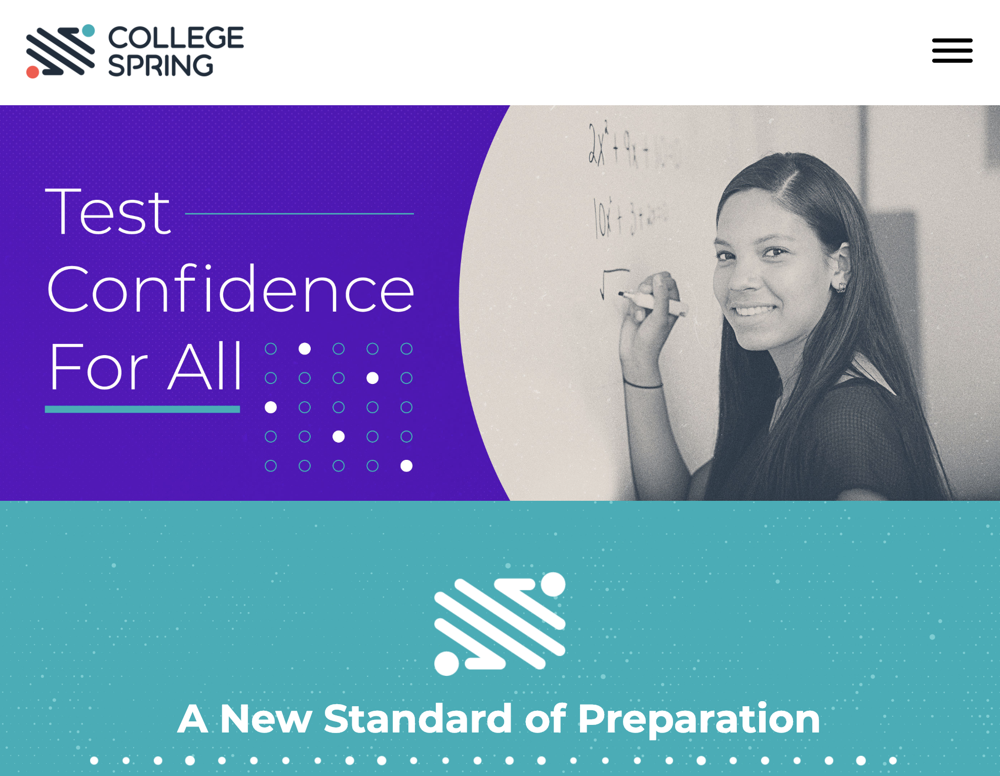

College Spring Mentorship
Mentored high scool students in low-income, low opportunity areas in central Oakland.

CollegeSpring provides schools with curriculum, training, and support.
Schools integrate the program into the existing school day.
Teachers build students' academic skills and Test Confidence™.
Students increase their scores and likelihood of matriculation.